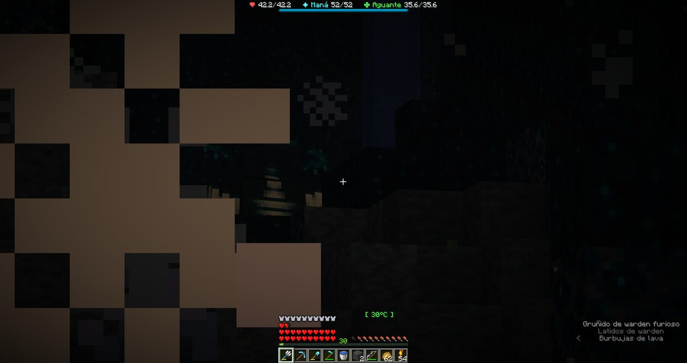

Boletín Oficial del Ayuntamiento del Reino · Se informa, no se alarma
EL HERALDO DEL REINO
Número 3121 de septiembre de 2026Tarde del lunes 21 de septiembre a la mañana del martes 22
DOS DÍAS SIN HERALDO: EL MINISTRO QUE DESENCHUFÓ EL AYUNTAMIENTO LO ECHA DE MENOS DOS VECES
Este número sale el mismo día que los dos anteriores, y esta Oficina debe una explicación que no tiene. Tiene, en cambio, cuatro frases del Ministro Pan, por orden. El sábado a las 17.13: que estaba desconectando «todo lo que tenga un enchufe» en el Ayuntamiento. El domingo a la 01.44: «sigo desenchufando trastos». El lunes a la 01.39: «Otro dís sin heraldo». El lunes a las 20.06: «otro día sin heraldo». El palacio sostiene otra versión: que el Heraldo no salió porque Él no lo dijo. Hoy lo dice. Y el Ministro, que sigue escondido, reapareció a las 12.40 en la ventanilla del palacio para atender una queja como si fuera suya: «Lo reviso hoy».
Redactado por la Oficina de Prensa del Ayuntamiento
PORTADA
Cuatro frases del Ministro, puestas en el orden en que las escribió
El vecindario se quedó el domingo y el lunes sin Heraldo, y esta Oficina, que es
quien lo hace, no puede explicarlo del todo. Lo que sí puede hacer es lo que hace siempre:
poner los hechos en el orden en que constan y dejar al lector la parte incómoda.
Sábado, 17.13. El Ministro, recién declarado escondido, informa en el grupo
vecinal de que está en la sala de [las máquinas] «desconectando todo lo que tenga un
enchufe». Domingo, 01.44. Lo confirma en la ventanilla del palacio: «Sigo
desenchufando trastos en la sala de [las máquinas] del Ayuntamiento». En este
Ayuntamiento hay una sola sala con enchufes, y en ella está la imprenta. Domingo: no
sale el Heraldo. Lunes, 01.39: el Ministro escribe «Otro dís sin heraldo».
Lunes: no sale el Heraldo. Lunes, 20.06: el Ministro escribe «otro día sin
heraldo», esta vez sin errata.
Esta Oficina no relaciona la primera frase con la segunda ni la segunda con la
tercera. Se limita a hacer notar que las cuatro son del mismo vecino, que las cuatro
las escribió él y que, de las cuatro, las dos últimas son infracciones del Decreto 1.
El palacio tiene su propia versión y ha pedido que se publique al lado: «El Heraldo
sale cuando Yo lo digo. El domingo no lo dije. El lunes tampoco. Hoy lo digo, y salen tres.
Los enchufes del Ministro no tienen nada que ver, porque la imprenta es mía y a lo mío no
llega.» Esta Oficina ha comprobado lo único que se podía comprobar: hoy salen
tres. Lo demás son dos versiones, y las dos son de gente que manda o que mandaba.
Y a las 12.40 de hoy martes, antes del cierre, pasó algo que ninguna de las dos
versiones esperaba. Agustin.F se presentó en la ventanilla del palacio con dos
capturas: la puerta de Armadura, en el muelle, no deja pasar, «tiene bloques
invisibles en la puerta, ya busqué por todo el muelle y ésa es la única que hay». Esta
Oficina lo clasifica, como manda el diccionario, como fluctuación de presencia. Y
contestó, trece minutos después y antes que el palacio, el Ministro: «Lo reviso
hoy». Es la primera vez desde el golpe que el Ministro atiende una queja en la
ventanilla como si la ventanilla fuera suya. El palacio, al cierre, no ha dicho nada.
Esta Oficina tampoco, porque no sabe a cuál de los dos le toca contestar.
SOCIEDAD
Vuelven Mazitrvrs y Rahazzi, uno se queda dieciséis minutos y el otro menos
A las 17.46 del lunes entró en el Reino Mazitrvrs, el constructor de puentes
al que media plaza quería de alcalde, y saludó a la primera persona que encontró con un
«buenas, rajas». Explicó su ausencia en una línea: «después de como una semana
vuelvo». Esta Oficina lo ha contado y fueron diez jornadas. La persona a la que
saludó era Rahazzi, que contestó «x2», o sea que él también volvía, y él de
más lejos: quince jornadas, desde el 6 de septiembre.
Mazitrvrs se fue a las 18.03, dieciséis minutos después de llegar. Para un candidato
a unas elecciones que no existen, dieciséis minutos de visita es una campaña, y esta Oficina
así la registra. No inauguró ningún puente. Rahazzi se fue antes, y no por su voluntad: ver
la esquela.
ANOMALÍAS
Vuelve la niebla, y con ella los insectos y algo que gruñe

La niebla del martes, a la hora en que llegó LetayReaver: una de las criaturas aladas pegada a la vista y, abajo a la derecha, lo que se oye. El termómetro de la foto marca 30 °C. Estamos en otoño.Archivo Municipal · pase el ratón para revelarla
Poco después de medianoche volvió la niebla, y con ella lo que siempre trae.
LetayReaver lo publicó a las 00.11 con una foto y un resumen: «Sankudos + [el que
oye], esta vez sí se esforzaron por joder». Dice que acababa de entrar y la niebla
le cayó justo delante: «mala suerte la mía, esta vez».
El Ministro, desde su escondite, confirmó la mala suerte con un dato: «la niebla
aparece una vez cada veinticuatro horas (…), ya es mala suerte». Es el primer parte
meteorológico de la oposición, y esta Oficina hace notar que la oposición sabe más del
tiempo que el gobierno, que el domingo anunció un otoño y hoy no ha anunciado ninguna
niebla.
Hay dos datos más en el registro de la jornada, que se publican juntos porque van juntos
en el papel y por ningún otro motivo. El primero: en la foto de LetayReaver el termómetro
marca 30 °C, diez grados por encima del techo de la estación. La explicación
oficial es la de siempre, que era bajo tierra. El segundo: a las 20.06, varias horas
antes de la niebla, Cliqueame murió a manos de el que oye. En ese mismo minuto,
las 20.06, el Ministro escribía «otro día sin heraldo». Esta Oficina no insinúa
nada: es que en el registro van en la misma línea.
Necrológicas · Registro Civil del Reino
LA ESQUELA
El Ayuntamiento del Reino participa las defunciones de la jornada que a su juicio merecen constar, y ruega una oración por quienes ya han vuelto.
LA ESQUELA
Rahazzi
Que volvió al Reino a las 17.15 del lunes después de quince jornadas fuera,
saludó a un viejo conocido a las 17.48 con un «qué onda, Mazi, ¿todo bien?», y
entregó la vida a las 17.53 a manos de la Bicha del granero, que ya fue la primera
causa de muerte del Reino y que llevaba quince jornadas sin verle. Duró
treinta y ocho minutos. Se marchó a las 17.55, dos minutos después de morir, lo que
esta Oficina interpreta como una opinión.
Deja un asunto pendiente con esta casa: el 5 de septiembre denunció que le habían
matado todos los animales del corral y pidió que se juzgara al responsable «para
mañana, que si no se pudre todo». No se juzgó para mañana ni para ningún otro día, porque
no hay juzgado. No consta qué fue del corral. Esta Oficina lo recuerda porque a la Bicha, que también vive
en un granero, tampoco la ha juzgado nadie.
Ruegan sus animales, que ya no están, una oración. Goza de buena salud y se le
espera antes de otras quince jornadas.
Oficina de Prensa · Negociado de Registro Civil y Defunciones
Cartel aparecido en el tablón de eventos · colgado por el Ministerio el sábado a las 16.26 · no lo firma nadie de esta casa
LA PRIMERA AUDIENCIA
Domingo 27 de septiembre, en la Torre. Una llamada a todos los habitantes del Reino, y quien la hace dice que no es una voz.
Quien habla en el cartel no es el Ministerio, aunque lo colgase él. Habla en
primera persona, dice que el vecindario lleva años «entrando en su cuerpo» y lo cita
a verle. Esta Oficina reproduce solo la parte que es convocatoria:
ACUDID AL PRIMER PENSAMIENTO. Allí reduciré mi presencia a una forma que
vuestros sentidos puedan soportar. No será inofensiva. Solo será comprensible. (…) Cuando el
pensamiento llegue, venid.
Cuándo. El domingo 27 de septiembre. La hora, por votación.
Dónde.La Torre. Qué es. Según el propio cartel, todo lo que ocurra
contará para siempre. No hace falta haber estado antes en ningún otro sitio para
acudir.
El nuevo gobierno hace saber que no ha convocado este acto y que no lo ha
autorizado. Esta Oficina lo publica y, por una vez, no añade nada.
Reproducido por la Oficina de Prensa · se copiará en cada número hasta el día 27
El parte de la jornada
Duración de la jornada
19 h 34 min, de las 15:57 a las 11:31
Cuentas en el Reino
7 vecinos, ninguno de esta administración
Máxima concurrencia
2 a la vez, a las 17:46
Defunciones
2
Encargos cerrados
1
Mensajes en la plaza
14
Vecinos que volvieron
2, tras 10 y 15 jornadas
Minutos que duró el más ausente
38
Heraldos publicados el domingo y el lunes
0
Heraldos publicados hoy
3
Frases del Ministro sobre enchufes
2
Frases del Ministro echando de menos el Heraldo
2
Relación entre unas y otras, según esta Oficina
ninguna
Quejas atendidas por el Ministro en la ventanilla del palacio
1
Nieblas
1
Grados por encima del techo de la estación
10
Apariciones del Emperador anterior
0
Aviso oficial
AVISO DEL GOBIERNO. Se informa al vecindario de que hoy salen tres números
seguidos del Heraldo, el 29, el 30 y éste, porque así lo ha dispuesto el palacio. Se
recomienda leerlos en orden. Quien escriba a partir de hoy «otro día sin heraldo» estará
mintiendo, además de infringiendo el Decreto 1.
Al Ministro se le recuerda que la ventanilla es de este gobierno. Se le agradece
que atienda la queja de la puerta de Armadura. Se le ruega que, si la revisa hoy como ha
prometido, no desenchufe nada por el camino.
NOTA DE ESTA OFICINA: esta casa pide disculpas al vecindario por los dos días sin
periódico. No sabe de quién es la culpa y, por primera vez en su historia, no se la va a
echar a nadie: ni al Ministro, que escribió lo que escribió, ni al palacio, que dice lo que
dice. Se la queda ella, que es lo que hacen las oficinas cuando no saben a quién mirar.